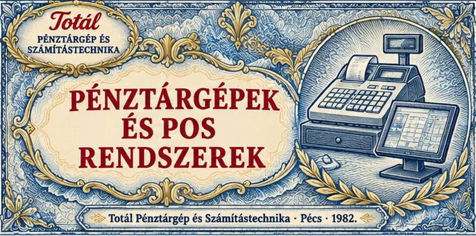
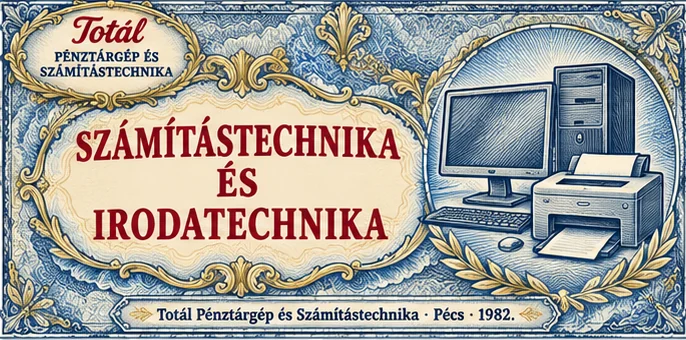
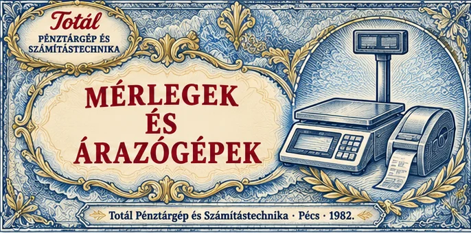
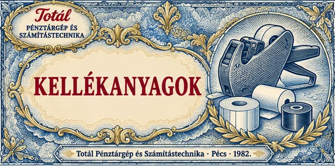
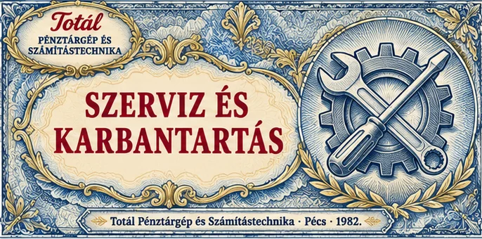
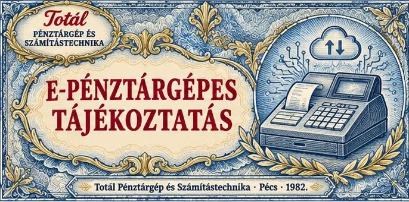

Három letisztult változat ugyanabból a hat bankjegyből. Görgessen végig, próbálja ki egérrel vagy ujjal, és írja meg, melyik betűjelű tetszik (A, B vagy C). Ez az oldal rejtett, a keresők nem látják.
A pénztárgéptől a számítógépig segítünk a megfelelő eszköz kiválasztásában, beállításában és használatának elsajátításában.

Online pénztárgépek és érintőképernyős kasszarendszerek különféle üzleti feladatokra. Segítünk a megfelelő készülék kiválasztásában, üzembe helyezésében és használatának elsajátításában.
Pénztárgépek
Számítógépek, laptopok, nyomtatók és hálózati megoldások üzleti és otthoni használatra. Igény szerint segítünk a beszerzésben, az összeállításban, a telepítésben és a javításban.
Irodatechnika
Bolti mérlegek, árazógépek és a hozzájuk tartozó kellékek. A felhasználási cél és a szükséges kapacitás alapján segítünk kiválasztani az Ön munkájához megfelelő megoldást.
Mérlegek
Hőpapírtekercsek, árazócímkék, festékhengerek és belövőszálak. A megfelelő méret kiválasztásához hozza magával készüléke pontos típusát, vagy hívjon minket.
Kellékanyagok
Pénztárgépek javítását, felülvizsgálatát és adómemória-kiolvasását, valamint számítógépek és hálózatok javítását is vállaljuk. Pénztárgép esetén kérjük, adja meg a készülék AP-számát is.
Szervizbejelentés
Segítünk áttekinteni az e-pénztárgépekkel kapcsolatos lehetőségeket, és felmérni, melyik megoldás illeszkedhet leginkább vállalkozása működéséhez.
Tanácsadás az átálláshozA pénztárgéptől a számítógépig segítünk a megfelelő eszköz kiválasztásában, beállításában és használatának elsajátításában.
Online pénztárgépek és érintőképernyős kasszarendszerek különféle üzleti feladatokra. Segítünk a megfelelő készülék kiválasztásában, üzembe helyezésében és használatának elsajátításában.
Számítógépek, laptopok, nyomtatók és hálózati megoldások üzleti és otthoni használatra. Igény szerint segítünk a beszerzésben, az összeállításban, a telepítésben és a javításban.
Bolti mérlegek, árazógépek és a hozzájuk tartozó kellékek. A felhasználási cél és a szükséges kapacitás alapján segítünk kiválasztani az Ön munkájához megfelelő megoldást.
Hőpapírtekercsek, árazócímkék, festékhengerek és belövőszálak. A megfelelő méret kiválasztásához hozza magával készüléke pontos típusát, vagy hívjon minket.
Pénztárgépek javítását, felülvizsgálatát és adómemória-kiolvasását, valamint számítógépek és hálózatok javítását is vállaljuk. Pénztárgép esetén kérjük, adja meg a készülék AP-számát is.
Segítünk áttekinteni az e-pénztárgépekkel kapcsolatos lehetőségeket, és felmérni, melyik megoldás illeszkedhet leginkább vállalkozása működéséhez.
A pénztárgéptől a számítógépig segítünk a megfelelő eszköz kiválasztásában, beállításában és használatának elsajátításában.